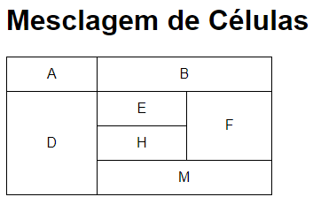
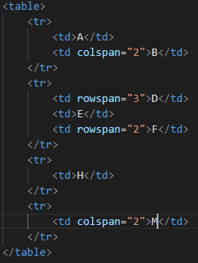
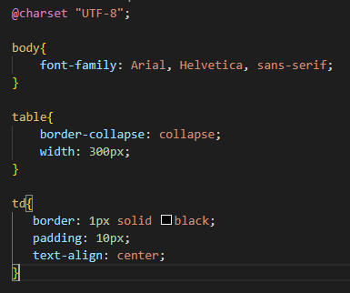

As tags são abertas uma dentro da outra, onde as tags são escritas alinhando as linhas e colunas
A Tabela é aberta com a tag <table>, seguida com a linha <tr>, e então adicionado cada dado com <td>.
Seguindo desta forma, digitando linha por linha, se chega ao resultado das colunas se formando.
Código da tabela
HTML de uma Tabela simplesCSS de uma Tabela simples
Digitado o código da forma acima, teremos um resultado da seguinte forma.
HTML apresentado no navegador
Tabela simples
Caso queira visualizar a tabela no seu navegador, acesse-o neste link
Hierarquia de tabelas grandes
TABLE <table>= Tabela
TABLE HEAD <thead>= Cabeçalho da tabela
TABLE ROW <tr>= Linha de tabela
TABLE HEADER <th>= Título de tabela
TABLE BODY <tbody>= Corpo da tabela
TABLE ROW <tr>= Linha de tabela
TABLE DATA <td>= Dado de tabela
TABLE FOOT <tfoot>= Pé da tabela
TABLE ROW <tr>= Linha de tabela
TABLE HEADER <th>= Título de tabela
TABLE DATA <td>= Dado de tabela
Uso de tabelas grandes
Assim como nas tabelas simples, as tags são abertas uma dentro da outra, onde as tags são escritas alinhando as linhas e colunas, porém utilizando das tags thead, tbody e tfoot.
A Tabela é aberta com a tag <table>, seguida com o cabeçalho, <thead> seguida da linha <tr>, e então adicionado cada título com <th>. Seguindo com o corpo da tabela <tbody>, seguida da linha <tr>, e então adicionado cada item com <td>.
No final da tabela podemos criar o Pé da tabela <tfoot>, seguida da linha <tr>, e então adicionado cada item com <td>.
Seguindo desta forma, digitando linha por linha, se chega ao resultado das colunas se formando.
Código da tabela
HTML de uma Tabela GrandeCSS de uma Tabela Grande
Digitado o código da forma acima, teremos um resultado da seguinte forma.
HTML apresentado no navegador
Tabela Grande
Efeito zebrado
Podemos utilizar o efeito zebrado fazendo uso da pseudo-classe :nth-child(odd) ou :nth-child(even).
Estas pseudo-classes permitem selecionar somente as tabelas pares (odd) ou ímpares (even), onde podemos definir uma propriedade de background-color em linhas pares ou ímpares
Cabeçalho Fixo
Para tornar um cabeçalho fixo, basta utilizar do seletor thead > tr > th{, seguido com as propriedades position, top e background-color, com os respectivos valores sticky, -2px e gray da mesma forma que a indicada abaixo.
Usando a position sticky, ao rolar a tela, a tag HTML informada no seletor se prenderá na posição indicada com a top, para que seja marcada a posição de onde a mesma deve se prender, lembrando de ajustar seu afastamento de margem. No entanto devemos informar a background-color novamente, para que não fique em um fundo invisível e quase ilegível por cima da tabela que continuará rolando ao fundo.
Caso queira visualizar a tabela no seu navegador, acesse-o neste link
Mesclagem de células
A tabela não é diferente das demais, porém agora para mesclagem de células, apenas devemos fazer a célula ocupar o espaço de duas células, utilizando apenas um seletor rowspan para ocupar duas células na mesma linha e/ou colspan para ocupar duas células na mesma coluna.
Desta forma, é possível criar tabelas que se parecem com essa abaixo.
HTML apresentado no navegador

Mesclagem de células
Código da tabela

HTML de célula mesclada

CSS de célula mesclada
Na parte de CSS não tem muita coisa diferente, apenas as definições de bordas, largura das células e a propriedade de border-collapse para que as células não fiquem afastadas e pareçam blocos separados
Caso queira visualizar a tabela no seu navegador, acesse-o neste link